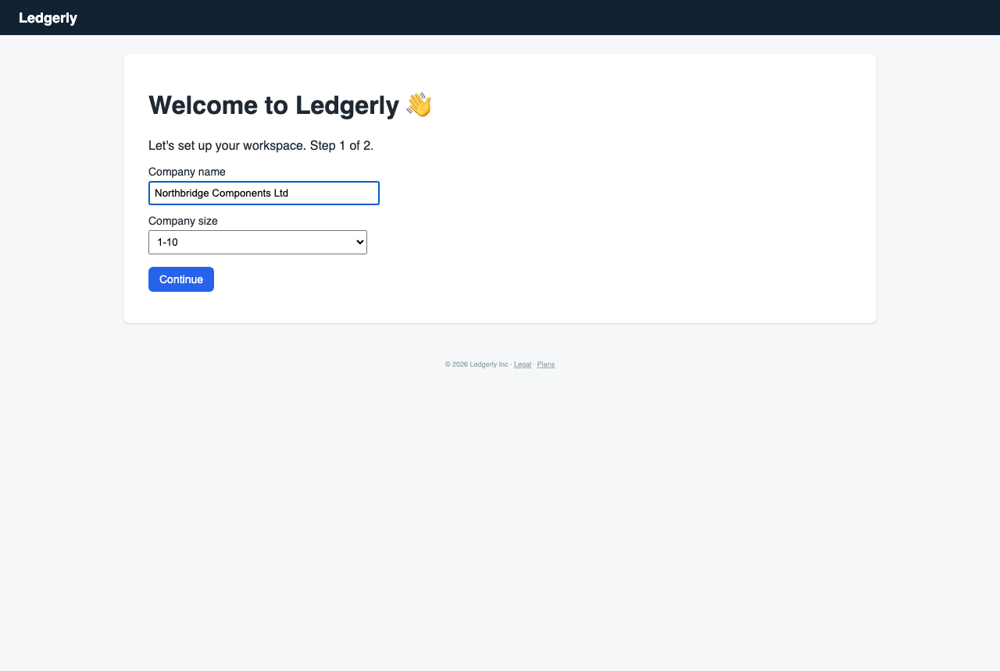
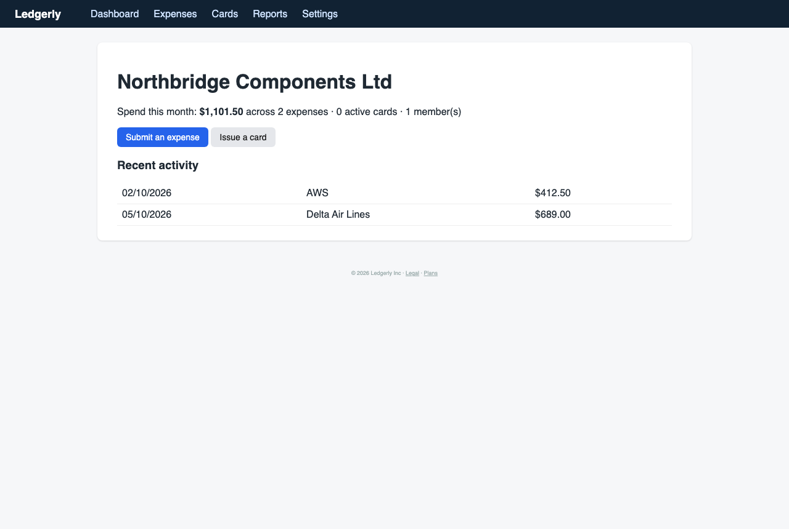
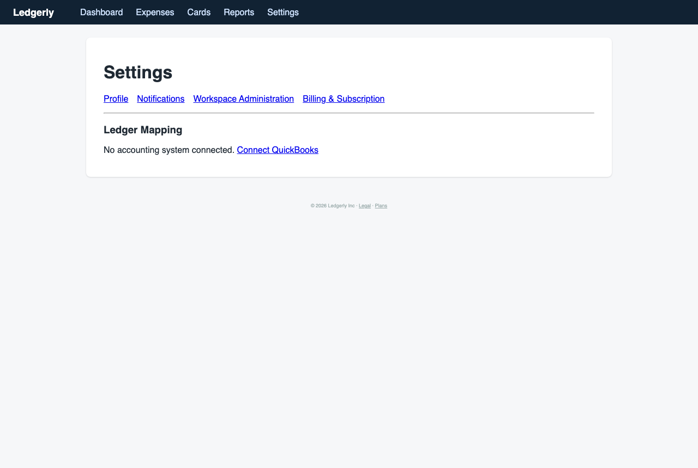
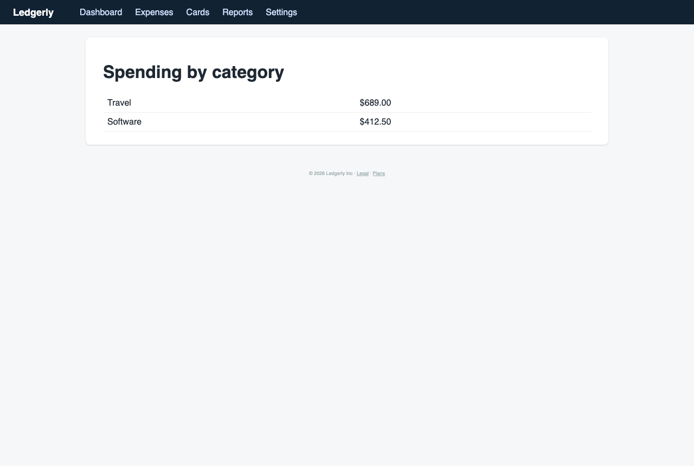

Marcus the Meticulous Finance Manager — Finance manager at a 60-person company migrating from spreadsheets and a legacy card provider
You own month-end close and are evaluating whether Ledgerly can replace your current process. You read every label, check each setting before saving, and worry about permissions and audit trails.
abandonedcareful patience 4/514 steps
Debrief
Would not keep using it · score 2/10 — I couldn't find or configure an approval rule, I couldn't review or reject an expense, and the existing expenses were auto-approved with no approver or audit trail. Team reporting and export are also missing. These are core controls for replacing my month-end process. I'll send the vendor my questions, and I'd only reconsider if they confirm threshold approvals, an audit log and team reporting exist or are on a committed roadmap.
| Goal | Outcome | Notes |
|---|---|---|
| Set up an approval rule so expenses over a certain amount need my sign-off | abandoned | I checked Settings (Profile, Notifications, Workspace Administration, Billing), Seats & Provisioning, Ledger Mapping and the Expenses pages. I found no approval policy or threshold setting anywhere. The only related item is the Approver entitlement on the seats form, and that assigns a role without defining a rule. The existing expenses were marked 'Approved (auto)' with no rule behind that status. I gave up after about six dead ends. |
| Review a submitted expense and approve or reject it with a note | failed | I never got to try this properly. Both expenses were already auto-approved, and there is no review queue, approve or reject button, or comment box. The expense detail page for AWS only shows amount, category, date and status. I stopped at the end of the session without a real attempt because nothing in the product offered the action. |
| Find where I can see spending broken down by category and by team | partial | Reports has 'Spending by category' (Travel $689.00, Software $412.50), and it ties to the $1,101.50 on the dashboard and the two expenses in the list. There is no team breakdown, date range, filter or export, so half of the goal is unmet. |
Frictions
- step 2: Onboarding step 2 pushes me to connect QuickBooks, Xero or NetSuite, and the only alternative is a small 'remind me later' link.
Expected: A clear statement of what skipping does, and confirmation that I can connect the ledger later without losing anything. · Happened: There was no explanation of the consequences of skipping, and the skip option was visually minor. · Why it matters: Connecting a ledger is a controlled decision for me. I don't want to be nudged into it before I know how the product handles approvals, and I can't tell if skipping leaves the setup half-configured.
- step 3: The dashboard after onboarding shows 1 member and 0 cards for a 60-person company, with no pointer to approval setup or inviting people.
Expected: A setup checklist covering inviting the team, setting approval policy and connecting the ledger. · Happened: I landed on a bare dashboard with two expenses and no next steps. · Why it matters: I can't tell what is still unconfigured, and I can't trust a workspace whose control state I can't see.
- step 5: Workspace Administration has General, Seats & Provisioning, Ledger Mapping and Identity Federation, and none of them is about approvals or spend policy.
Expected: An 'Approval Policies' or 'Spend Controls' section. · Happened: I had to open sections one by one guessing where a rule might live, and none had it. · Why it matters: Approval policy is the core money control. If I can't find it, I assume it doesn't exist, and I can't justify the tool to my CFO.
- step 6: Seats & Provisioning offers an Approver entitlement but no threshold, and the 'principal identifier' field doesn't say whether it wants an email or a user ID.
Expected: Roles tied to a rule (e.g. over $X goes to this approver) and a clearly labelled email field. · Happened: There is a role dropdown (Submitter, Approver, Admin) with no connection to any amount or routing, and an ambiguous identifier field. · Why it matters: A role without a rule controls nothing, and ambiguous labels on a permissions form risk granting access to the wrong person.
- step 7: Both expenses are submitted by 'You' (the owner) and are already 'Approved', and the list has no policy link.
Expected: Pending expenses, or at least the approver and the reason for approval shown in the list. · Happened: Everything is approved with no trail. · Why it matters: The owner submitting and effectively approving their own spend is a segregation-of-duties problem, and my auditors will ask about it.
- step 8: The expense detail shows only amount, category, date and 'Status: Approved (auto)', with no approver, timestamp, note, audit trail, or reject and comment actions.
Expected: Submitter, approver, approval timestamp, the rule that applied and an audit log of changes. · Happened: A one-line status with no explanation of which rule auto-approved it. · Why it matters: I can't prove who approved what or why. Expenses above my threshold might also be auto-approved, which is a control failure.
- step 9: Ledger Mapping only says 'No accounting system connected' and offers 'Connect QuickBooks', with no GL code or cost center mapping options visible.
Expected: GL code and cost center mapping that I can configure before connecting, and a clear statement of which system is supported. · Happened: A single call to action pushing a connection. · Why it matters: I code expenses to GL accounts and cost centers every month. I can't evaluate the product's fit without seeing how it maps them.
- step 10: When I gave up on the approval goal, nothing acknowledged it, and no message said whether the feature exists or where to get help.
Expected: A note that threshold approvals aren't configurable here, or a support or docs pointer. · Happened: The screen was unchanged and nothing was logged. · Why it matters: I can't tell whether the feature is missing or I missed a setting, so I have to email the vendor to find out.
- step 11: Reports has category totals only, with no team dimension, date range, filter or export.
Expected: Spend by category and by team, with a period selector and CSV export. · Happened: Two category rows with no context about period or approval status. · Why it matters: I need team-level spend for cost center review, and I need exports to reconcile to the GL at month-end. The category numbers do tie to the expense list, which is good, but not enough.
Missing features
- Approval policy / threshold rules (e.g. expenses over $X require a named approver's sign-off) — This is my main control, and I found no place to configure it.
- Pending approval queue with approve/reject actions and a note field — I need to review and reject with a documented reason, and no such action exists.
- Audit log of approvals, setting changes and role changes — Changes to money controls must be traceable and reversible, and I need to show this to my CFO and auditors.
- Spend by team / cost center report — I need team-level budget review and allocation.
- Report date range, filters and CSV export — I need them to reconcile reports to the GL at month-end.
- Visible explanation of auto-approval and a setting to disable it — Silent auto-approval without a stated rule is unacceptable for a low-risk-tolerance finance owner.
- Team invitation and bulk member import — A 60-person company can't run on one member, and I saw no clear path to onboard people beyond a single-principal form.
Liked
- The category totals on Reports tie exactly to the expense list and the dashboard total ($689.00 + $412.50 = $1,101.50), so the numbers can be verified.
- Onboarding validated and saved the company name and size clearly, and I could see both values before continuing.
- The Seats & Provisioning page has an explicit Submitter, Approver and Admin role split, which suggests granular roles are intended.
- Settings navigation is simple and quick to scan.
Replay — Goal → Action → Expectation → Result → Friction
type #0 “Northbridge Components Ltd”
select #1 “51-200”
click #2click #3
click #4
click #7
click #10
click #1
click #7
navigate /settings/workspace/ledger
give_up_goal
navigate /reports
give_up_goal
finish